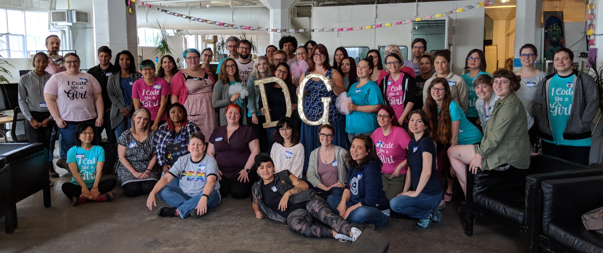

At Django Girls PDX, we’re aware of how ubiquitous technology is in our daily lives. Because technology is so essential, it is incredibly important and empowering to both know how it works and have the skills to produce it. Unfortunately, society often perpetuates the idea that this knowledge and these skills should be possessed by men, meaning that people of other genders miss out on opportunities to learn about technology and explore their interest in it.
Our mission is to address this problem. To do so, we put on free, one day workshops for women and gender minorities built for total beginners, where coaches work with small groups to build a website from the ground up in Python and Django. We want to create a safe space where people can learn and ask questions. By doing so, we hope to remove as many barriers as possible to help attendees learn, and show women and gender minorities interested in technology that they’re not alone.
Our hope is that, at the end of the workshop, attendees walk away feeling that they had a positive experience with programming, and that they have a greater understanding of the technology they use every day. Most importantly, we want attendees to feel encouraged and empowered to continue learning about technology on their own.
We operate as the Portland chapter of the larger international Django Girls organization.